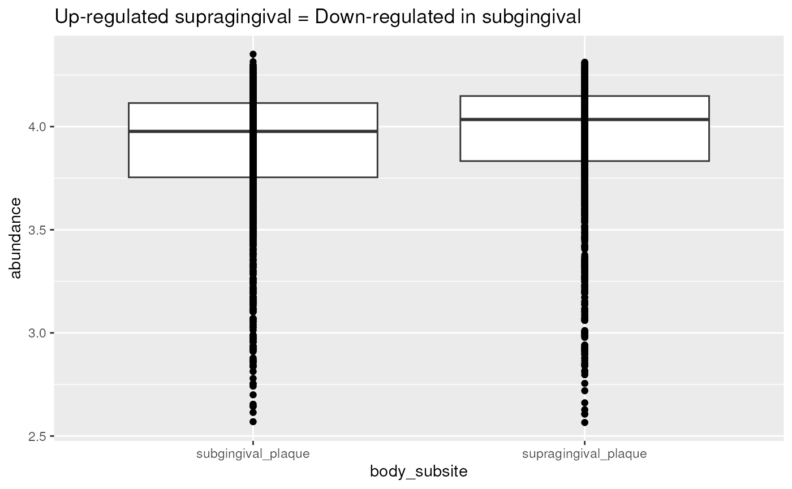

vignettes/articles/subgingival_plaque.Rmd
subgingival_plaque.Rmd
library(bugphyzzAnalyses)
library(MicrobiomeBenchmarkData)
library(bugphyzz)
library(EnrichmentBrowser)
library(mia)
library(dplyr)
library(DT)
library(purrr)
library(tibble)
library(tidyr)
library(ggplot2)The main purpose of this vignette is to find the expected enrichment results in a biological dataset with ground truth. The expected result is enrichment of aerobic taxa in the supragingival plaque and enrichment of anaerobic taxa in the subgingival plaque. Obtaining the expected results could be interpreted as an indicative that the bugphyzz annotations are useful for meaningful bug set enrichemnt analysis (BSEA).
dat_name <- 'HMP_2012_16S_gingival_V35'
tse <- getBenchmarkData(dat_name, dryrun = FALSE)[[1]]
tse_genus <- splitByRanks(tse)$genus
## Filter taxa with at least 1 count as abundance in at least 20% of samples
min_n_samples <- round(ncol(tse_genus) * 0.2)
tse_subset <- tse_genus[rowSums(assay(tse_genus) >= 1) >= min_n_samples,]
tse_subset
#> class: TreeSummarizedExperiment
#> dim: 37 311
#> metadata(1): agglomerated_by_rank
#> assays(1): counts
#> rownames(37): Streptococcus Neisseria ... Mogibacterium Peptococcus
#> rowData names(7): superkingdom phylum ... genus taxon_annotation
#> colnames(311): 700103497 700106940 ... 700111586 700109119
#> colData names(15): dataset subject_id ... sequencing_method
#> variable_region_16s
#> reducedDimNames(0):
#> mainExpName: NULL
#> altExpNames(0):
#> rowLinks: a LinkDataFrame (37 rows)
#> rowTree: 1 phylo tree(s) (45364 leaves)
#> colLinks: NULL
#> colTree: NULLNumber of samples per condition
table(tse_subset$body_subsite)
#>
#> subgingival_plaque supragingival_plaque
#> 152 159Signatures at the genus level:
bp <- importBugphyzz()
aer <- filter(bp, Attribute_group == 'aerophilicity')
gn_sigs <- getBugphyzzSignatures(
df = aer, tax.id.type = 'Taxon_name', tax.level = 'genus',
frequency = c('always', 'usually', 'sometimes')
)
edger <- limmaVoom(edger)
gsea <- sbea(
method = 'gsea', se = edger, gs = gn_sigs, perm = 1000, padj.method = 'BH',
alpha = 0.1
)
gsea_tbl <- as.data.frame(gsea$res.tbl)
gsea_tbl <- gsea_tbl |>
arrange(PVAL) |>
mutate(
GENE.SET = ifelse(ADJ.PVAL < 0.1, paste0(GENE.SET, ' *'), GENE.SET),
PVAL = format(PVAL, scientific = TRUE),
ADJ.PVAL = format(ADJ.PVAL, scientific = TRUE)
) |>
rename(BUG.SET = GENE.SET)
caption1 <- c(
'Table 1. GSEA results comparing subgingival vs supragingival plaque.
ES = Enrichment score, NES = Normalized Enrichment Score. Positive and
negative scores (ES and NES) indicate enrichment in the supragingival and
subgingival plaque, respectively. Bug sets marked with an asterik (*)
indicate significant enrichment results (adjusted p-value < 0.1).
Benjamini & Hochberg (BH) was used for P value adjustment.'
)
datatable(
data = gsea_tbl,
filter = 'top',
rownames = FALSE,
extensions = 'Buttons',
options = list(
dom = 'Bft',
buttons = list('copy', 'print'),
iDisplayLength = 10,
keys = TRUE,
autoWidth = TRUE
),
caption = htmltools::tags$caption(
style = 'caption-side: top; text-align: left;',
caption1
)
)Enriched in supragingival (up):
edger_up <- edger
rowData(edger_up)$ADJ.PVAL <- ifelse(
rowData(edger_up)$FC < 0, 1, rowData(edger_up)$ADJ.PVAL
)
ora_up <- sbea(
method = 'ora', se = edger_up, gs = gn_sigs, alpha = 0.1, perm = 0,
padj.method = 'BH'
)
ora_up_df <- as.data.frame(ora_up$res.tbl)
ora_up_df$BODY.SITE <- 'Supragingival plaque'Enriched in subgingival (down):
edger_down <- edger
rowData(edger_down)$ADJ.PVAL <- ifelse(
rowData(edger_down)$FC > 0, 1, rowData(edger_down)$ADJ.PVAL
)
ora_down <- sbea(
method = 'ora', se = edger_down, gs = gn_sigs, alpha = 0.1, perm = 0,
padj.method = 'BH'
)
ora_down_df <- data.frame(ora_down$res.tbl)
ora_down_df$BODY.SITE <- 'Subgingival plaque'Combine into a single table:
ora <- bind_rows(ora_up_df, ora_down_df) |>
arrange(BODY.SITE, PVAL) |>
relocate(BODY.SITE) |>
mutate(
GENE.SET = ifelse(ADJ.PVAL < 0.1, paste0(GENE.SET, ' *'), GENE.SET),
PVAL = format(PVAL, scientific = TRUE),
ADJ.PVAL = format(ADJ.PVAL, scientific = TRUE)
) |>
dplyr::rename(
BUG.SET = GENE.SET, NR.BUGS = NR.GENES, NR.SIG.BUGS = NR.SIG.GENES
)
caption2 <- c(
'Table 2. ORA results comparing subgingival vs supragingival plaque.
NR.BUGS = Number of annotated bugs in the reference set,
NR.SIG.BUGS = Number of annotated bugs with significant differential
abundance (FC > 0 & ADJ.PVAL < 0.1). Bug sets marked with an asterisk (*)
indicate significant enrichment resuts (adjusted p-value < 0.1).
Benjamini & Hochberg (BH) was used for P value adjustment.'
)
datatable(
data = ora,
filter = 'top',
rownames = FALSE,
extensions = 'Buttons',
options = list(
dom = 'Bft',
buttons = list('copy', 'print'),
iDisplayLength = 10,
keys = TRUE,
autoWidth = TRUE
),
caption = htmltools::tags$caption(
style = 'caption-side: top; text-align: left;',
caption2
)
)Abundance of taxa in the ‘down-regulated’ set:
## Couldn't make tidySummarizedExperiment work.
## Update code later.
counts1 <- assay(edger_down, 'counts')
counts1 <- log2(counts1 + 1)
counts1 <- counts1 |>
as.data.frame() |>
rownames_to_column(var = 'taxname') |>
pivot_longer(
cols = 2:last_col(), names_to = 'sample', values_to = 'abundance'
)
row_data1 <- edger_down |>
rowData() |>
as.data.frame() |>
rownames_to_column(var = 'taxname') |>
as_tibble()
col_data1 <- edger_down |>
colData() |>
as.data.frame() |>
rownames_to_column(var = 'sample') |>
as_tibble()
data1 <- left_join(counts1, row_data1, by = 'taxname') |>
left_join(col_data1, by = 'sample')
p1 <- data1 |>
filter(ADJ.PVAL < 0.1) |>
ggplot(aes(body_subsite, abundance)) +
labs(
title = 'Down-regulated supragingival = Up-regulated in subgingival'
) +
geom_boxplot() +
geom_point()
p1Abundance of taxa in the ‘up-regulated’ set:
## Couldn't make tidySummarizedExperiment work.
## Update code later.
counts2 <- assay(edger_up, 'counts')
counts2 <- log2(counts2 + 1)
counts2 <- counts2 |>
as.data.frame() |>
rownames_to_column(var = 'taxname') |>
pivot_longer(
cols = 2:last_col(), names_to = 'sample', values_to = 'abundance'
)
row_data2 <- edger_up |>
rowData() |>
as.data.frame() |>
rownames_to_column(var = 'taxname') |>
as_tibble()
col_data2 <- edger_up |>
colData() |>
as.data.frame() |>
rownames_to_column(var = 'sample') |>
as_tibble()
data2 <- left_join(counts2, row_data2, by = 'taxname') |>
left_join(col_data2, by = 'sample')
p2 <- data2 |>
filter(ADJ.PVAL < 0.1) |>
ggplot(aes(body_subsite, abundance)) +
labs(
title = 'Up-regulated supragingival = Down-regulated in subgingival'
) +
geom_boxplot() +
geom_point()
p2
sessioninfo::session_info()
#> ─ Session info ───────────────────────────────────────────────────────────────
#> setting value
#> version R version 4.3.0 (2023-04-21)
#> os Ubuntu 22.04.2 LTS
#> system x86_64, linux-gnu
#> ui X11
#> language en
#> collate en_US.UTF-8
#> ctype en_US.UTF-8
#> tz Etc/UTC
#> date 2023-06-23
#> pandoc 2.19.2 @ /usr/local/bin/ (via rmarkdown)
#>
#> ─ Packages ───────────────────────────────────────────────────────────────────
#> package * version date (UTC) lib source
#> annotate 1.78.0 2023-04-25 [1] Bioconductor
#> AnnotationDbi 1.62.1 2023-05-02 [1] Bioconductor
#> ape 5.7-1 2023-03-13 [1] RSPM (R 4.3.0)
#> beachmat 2.16.0 2023-04-25 [1] Bioconductor
#> beeswarm 0.4.0 2021-06-01 [1] RSPM (R 4.3.0)
#> Biobase * 2.60.0 2023-04-25 [1] Bioconductor
#> BiocFileCache 2.8.0 2023-04-25 [1] Bioconductor
#> BiocGenerics * 0.46.0 2023-04-25 [1] Bioconductor
#> BiocNeighbors 1.18.0 2023-04-25 [1] Bioconductor
#> BiocParallel 1.34.2 2023-05-22 [1] Bioconductor
#> BiocSingular 1.16.0 2023-04-25 [1] Bioconductor
#> Biostrings * 2.68.1 2023-05-16 [1] Bioconductor
#> bit 4.0.5 2022-11-15 [1] RSPM (R 4.3.0)
#> bit64 4.0.5 2020-08-30 [1] RSPM (R 4.3.0)
#> bitops 1.0-7 2021-04-24 [1] RSPM (R 4.3.0)
#> blob 1.2.4 2023-03-17 [1] RSPM (R 4.3.0)
#> bold 1.3.0 2023-05-02 [1] RSPM (R 4.3.0)
#> bslib 0.5.0 2023-06-09 [1] RSPM (R 4.3.0)
#> bugphyzz * 0.0.1.3 2023-06-23 [1] Github (waldronlab/bugphyzz@7abbf41)
#> bugphyzzAnalyses * 0.1.0 2023-06-23 [1] local
#> cachem 1.0.8 2023-05-01 [1] RSPM (R 4.3.0)
#> cli 3.6.1 2023-03-23 [1] RSPM (R 4.3.0)
#> cluster 2.1.4 2022-08-22 [2] CRAN (R 4.3.0)
#> codetools 0.2-19 2023-02-01 [2] CRAN (R 4.3.0)
#> colorspace 2.1-0 2023-01-23 [1] RSPM (R 4.3.0)
#> conditionz 0.1.0 2019-04-24 [1] RSPM (R 4.3.0)
#> crayon 1.5.2 2022-09-29 [1] RSPM (R 4.3.0)
#> crosstalk 1.2.0 2021-11-04 [1] RSPM (R 4.3.0)
#> crul 1.4.0 2023-05-17 [1] RSPM (R 4.3.0)
#> curl 5.0.1 2023-06-07 [1] RSPM (R 4.3.0)
#> data.table 1.14.8 2023-02-17 [1] RSPM (R 4.3.0)
#> DBI 1.1.3 2022-06-18 [1] RSPM (R 4.3.0)
#> dbplyr 2.3.2 2023-03-21 [1] RSPM (R 4.3.0)
#> DECIPHER 2.28.0 2023-04-25 [1] Bioconductor
#> decontam 1.20.0 2023-04-25 [1] Bioconductor
#> DelayedArray 0.26.3 2023-05-22 [1] Bioconductor
#> DelayedMatrixStats 1.22.1 2023-06-09 [1] Bioconductor
#> desc 1.4.2 2022-09-08 [1] RSPM (R 4.3.0)
#> digest 0.6.31 2022-12-11 [1] RSPM (R 4.3.0)
#> DirichletMultinomial 1.42.0 2023-04-25 [1] Bioconductor
#> dplyr * 1.1.2 2023-04-20 [1] RSPM (R 4.3.0)
#> DT * 0.28 2023-05-18 [1] RSPM (R 4.3.0)
#> edgeR 3.42.4 2023-05-31 [1] Bioconductor
#> ellipsis 0.3.2 2021-04-29 [1] RSPM (R 4.3.0)
#> EnrichmentBrowser * 2.30.1 2023-05-14 [1] Bioconductor
#> evaluate 0.21 2023-05-05 [1] RSPM (R 4.3.0)
#> fansi 1.0.4 2023-01-22 [1] RSPM (R 4.3.0)
#> farver 2.1.1 2022-07-06 [1] RSPM (R 4.3.0)
#> fastmap 1.1.1 2023-02-24 [1] RSPM (R 4.3.0)
#> filelock 1.0.2 2018-10-05 [1] RSPM (R 4.3.0)
#> fs 1.6.2 2023-04-25 [1] RSPM (R 4.3.0)
#> generics 0.1.3 2022-07-05 [1] RSPM (R 4.3.0)
#> GenomeInfoDb * 1.36.1 2023-06-21 [1] Bioconductor
#> GenomeInfoDbData 1.2.10 2023-05-17 [1] Bioconductor
#> GenomicRanges * 1.52.0 2023-04-25 [1] Bioconductor
#> ggbeeswarm 0.7.2 2023-04-29 [1] RSPM (R 4.3.0)
#> ggplot2 * 3.4.2 2023-04-03 [1] RSPM (R 4.3.0)
#> ggrepel 0.9.3 2023-02-03 [1] RSPM (R 4.3.0)
#> glue 1.6.2 2022-02-24 [1] RSPM (R 4.3.0)
#> graph * 1.78.0 2023-04-25 [1] Bioconductor
#> gridExtra 2.3 2017-09-09 [1] RSPM (R 4.3.0)
#> GSEABase 1.62.0 2023-04-25 [1] Bioconductor
#> gtable 0.3.3 2023-03-21 [1] RSPM (R 4.3.0)
#> highr 0.10 2022-12-22 [1] RSPM (R 4.3.0)
#> hoardr 0.5.3 2023-01-26 [1] RSPM (R 4.3.0)
#> htmltools 0.5.5 2023-03-23 [1] RSPM (R 4.3.0)
#> htmlwidgets 1.6.2 2023-03-17 [1] RSPM (R 4.3.0)
#> httpcode 0.3.0 2020-04-10 [1] RSPM (R 4.3.0)
#> httr 1.4.6 2023-05-08 [1] RSPM (R 4.3.0)
#> IRanges * 2.34.1 2023-06-22 [1] Bioconductor
#> irlba 2.3.5.1 2022-10-03 [1] RSPM (R 4.3.0)
#> jquerylib 0.1.4 2021-04-26 [1] RSPM (R 4.3.0)
#> jsonlite 1.8.5 2023-06-05 [1] RSPM (R 4.3.0)
#> KEGGgraph 1.60.0 2023-04-25 [1] Bioconductor
#> KEGGREST 1.40.0 2023-04-25 [1] Bioconductor
#> knitr 1.43 2023-05-25 [1] RSPM (R 4.3.0)
#> labeling 0.4.2 2020-10-20 [1] RSPM (R 4.3.0)
#> lattice 0.21-8 2023-04-05 [2] CRAN (R 4.3.0)
#> lazyeval 0.2.2 2019-03-15 [1] RSPM (R 4.3.0)
#> lifecycle 1.0.3 2022-10-07 [1] RSPM (R 4.3.0)
#> limma 3.56.2 2023-06-04 [1] Bioconductor
#> locfit 1.5-9.8 2023-06-11 [1] RSPM (R 4.3.0)
#> magrittr 2.0.3 2022-03-30 [1] RSPM (R 4.3.0)
#> MASS 7.3-59 2023-04-21 [2] RSPM (R 4.3.0)
#> Matrix 1.5-4 2023-04-04 [2] CRAN (R 4.3.0)
#> MatrixGenerics * 1.12.2 2023-06-09 [1] Bioconductor
#> matrixStats * 1.0.0 2023-06-02 [1] RSPM (R 4.3.0)
#> memoise 2.0.1 2021-11-26 [1] RSPM (R 4.3.0)
#> mgcv 1.8-42 2023-03-02 [2] CRAN (R 4.3.0)
#> mgsub 1.7.3 2021-07-28 [1] RSPM (R 4.3.0)
#> mia * 1.8.0 2023-04-25 [1] Bioconductor
#> MicrobiomeBenchmarkData * 1.3.0 2023-06-23 [1] Github (waldronlab/MicrobiomeBenchmarkData@a131a61)
#> MultiAssayExperiment * 1.26.0 2023-04-25 [1] Bioconductor
#> munsell 0.5.0 2018-06-12 [1] RSPM (R 4.3.0)
#> nlme 3.1-162 2023-01-31 [2] CRAN (R 4.3.0)
#> permute 0.9-7 2022-01-27 [1] RSPM (R 4.3.0)
#> pillar 1.9.0 2023-03-22 [1] RSPM (R 4.3.0)
#> pkgconfig 2.0.3 2019-09-22 [1] RSPM (R 4.3.0)
#> pkgdown 2.0.7 2022-12-14 [1] RSPM (R 4.3.0)
#> plyr 1.8.8 2022-11-11 [1] RSPM (R 4.3.0)
#> png 0.1-8 2022-11-29 [1] RSPM (R 4.3.0)
#> purrr * 1.0.1 2023-01-10 [1] RSPM (R 4.3.0)
#> R6 2.5.1 2021-08-19 [1] RSPM (R 4.3.0)
#> ragg 1.2.5 2023-01-12 [1] RSPM (R 4.3.0)
#> rappdirs 0.3.3 2021-01-31 [1] RSPM (R 4.3.0)
#> Rcpp 1.0.10 2023-01-22 [1] RSPM (R 4.3.0)
#> RCurl 1.98-1.12 2023-03-27 [1] RSPM (R 4.3.0)
#> reshape2 1.4.4 2020-04-09 [1] RSPM (R 4.3.0)
#> Rgraphviz 2.44.0 2023-04-25 [1] Bioconductor
#> rlang 1.1.1 2023-04-28 [1] RSPM (R 4.3.0)
#> rmarkdown 2.22 2023-06-01 [1] RSPM (R 4.3.0)
#> rprojroot 2.0.3 2022-04-02 [1] RSPM (R 4.3.0)
#> RSQLite 2.3.1 2023-04-03 [1] RSPM (R 4.3.0)
#> rsvd 1.0.5 2021-04-16 [1] RSPM (R 4.3.0)
#> S4Arrays 1.0.4 2023-05-14 [1] Bioconductor
#> S4Vectors * 0.38.1 2023-05-02 [1] Bioconductor
#> safe 3.40.0 2023-04-25 [1] Bioconductor
#> sass 0.4.6 2023-05-03 [1] RSPM (R 4.3.0)
#> ScaledMatrix 1.8.1 2023-05-03 [1] Bioconductor
#> scales 1.2.1 2022-08-20 [1] RSPM (R 4.3.0)
#> scater 1.28.0 2023-04-25 [1] Bioconductor
#> scuttle 1.10.1 2023-05-02 [1] Bioconductor
#> sessioninfo 1.2.2 2021-12-06 [1] RSPM (R 4.3.0)
#> SingleCellExperiment * 1.22.0 2023-04-25 [1] Bioconductor
#> SparseM 1.81 2021-02-18 [1] RSPM (R 4.3.0)
#> sparseMatrixStats 1.12.1 2023-06-20 [1] Bioconductor
#> statmod 1.5.0 2023-01-06 [1] RSPM (R 4.3.0)
#> stringi 1.7.12 2023-01-11 [1] RSPM (R 4.3.0)
#> stringr 1.5.0 2022-12-02 [1] RSPM (R 4.3.0)
#> SummarizedExperiment * 1.30.2 2023-06-06 [1] Bioconductor
#> systemfonts 1.0.4 2022-02-11 [1] RSPM (R 4.3.0)
#> taxa 0.4.2 2022-04-12 [1] RSPM (R 4.3.0)
#> taxize 1.0 2023-06-23 [1] Github (ropensci/taxize@bcff2a6)
#> taxizedb 0.3.1 2023-04-03 [1] RSPM (R 4.3.0)
#> textshaping 0.3.6 2021-10-13 [1] RSPM (R 4.3.0)
#> tibble * 3.2.1 2023-03-20 [1] RSPM (R 4.3.0)
#> tidyr * 1.3.0 2023-01-24 [1] RSPM (R 4.3.0)
#> tidyselect 1.2.0 2022-10-10 [1] RSPM (R 4.3.0)
#> tidytree 0.4.2 2022-12-18 [1] RSPM (R 4.3.0)
#> treeio 1.24.1 2023-05-31 [1] Bioconductor
#> TreeSummarizedExperiment * 2.8.0 2023-04-25 [1] Bioconductor
#> tzdb 0.4.0 2023-05-12 [1] RSPM (R 4.3.0)
#> utf8 1.2.3 2023-01-31 [1] RSPM (R 4.3.0)
#> uuid 1.1-0 2022-04-19 [1] RSPM (R 4.3.0)
#> vctrs 0.6.3 2023-06-14 [1] RSPM (R 4.3.0)
#> vegan 2.6-4 2022-10-11 [1] RSPM (R 4.3.0)
#> vipor 0.4.5 2017-03-22 [1] RSPM (R 4.3.0)
#> viridis 0.6.3 2023-05-03 [1] RSPM (R 4.3.0)
#> viridisLite 0.4.2 2023-05-02 [1] RSPM (R 4.3.0)
#> vroom 1.6.3 2023-04-28 [1] RSPM (R 4.3.0)
#> withr 2.5.0 2022-03-03 [1] RSPM (R 4.3.0)
#> xfun 0.39 2023-04-20 [1] RSPM (R 4.3.0)
#> XML 3.99-0.14 2023-03-19 [1] RSPM (R 4.3.0)
#> xml2 1.3.4 2023-04-27 [1] RSPM (R 4.3.0)
#> xtable 1.8-4 2019-04-21 [1] RSPM (R 4.3.0)
#> XVector * 0.40.0 2023-04-25 [1] Bioconductor
#> yaml 2.3.7 2023-01-23 [1] RSPM (R 4.3.0)
#> yulab.utils 0.0.6 2022-12-20 [1] RSPM (R 4.3.0)
#> zlibbioc 1.46.0 2023-04-25 [1] Bioconductor
#>
#> [1] /usr/local/lib/R/site-library
#> [2] /usr/local/lib/R/library
#>
#> ──────────────────────────────────────────────────────────────────────────────